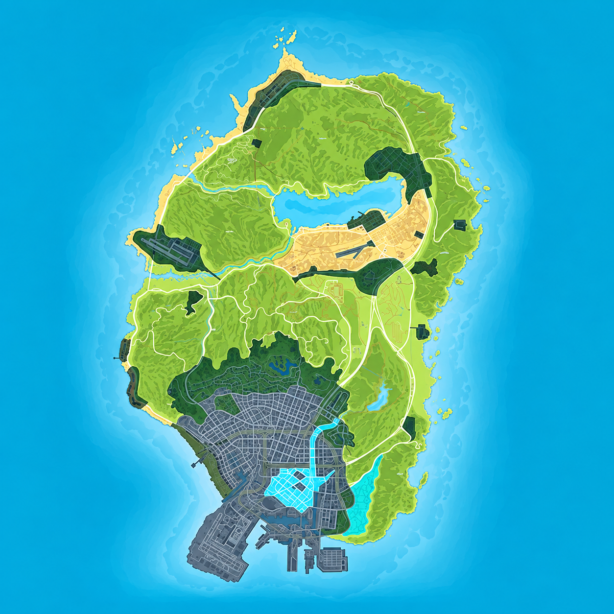

PRAVIDLA SERVERU
Před vstupem na server se seznam s pravidly. Neznalost pravidel neomlouvá. Na Bohemia RP dbáme na seriózní a kvalitní RolePlay.
Základní pojmy
Základní pojmy, které v rámci RolePlaye využíváme. Na serveru dbáme na seriózitu a kvalitu RP.
- Hráč nesmí využívat cheaty, scripty, programy třetích stran či jiné úpravy hry, které by jej zvýhodnily oproti ostatním hráčům.
- Každý hráč musí mít jméno ve hře a na Discordu tak, aby se dalo označit.
- Každý hráč musí mít jméno na Discordu stejné jako své OOC jméno.
- Je zakázáno vyhýbání se RP akcím.
- Je zakázáno být vulgární, používat nevhodné výrazy nebo reklamy v herním nicku.
- Je zakázáno vyvolávat OOC konflikty nebo hodnotit RP ostatních hráčů v LOOC.
- N-word je na serveru zakázané.
- Je přísně zakázáno dělat reklamu na jiné projekty.
- Na serveru nejsou žádné PVP nebo nelegální zóny, kromě vyhrazené části Cayo Perico.
- Pokud hráč dostane ban během RP akce, neznamená to automatické ukončení RP. O ukončení rozhoduje Admin Team.
- Střelné zbraně nelze RPit jako airsoftové, paintballové nebo hračky.
- Herní postava musí být starší 18 let.
- Hráči jsou povinni respektovat ToS Rockstar Games.
- Hráči mají zakázané dělat cokoliv připomínající sexuální aktivity.
- Nelze používat reálné názvy značek nebo organizací, které nejsou součástí RP světa.
- Neschválená skupina se počítá od 6 a více lidí.
Základní pravidla
OOC jednání
Pokud jednáte OOC (Out Of Character), jednáte mimo svou postavu, tedy jako hráč.
IC jednání
Komunikace a jednání přímo v rámci RP.
PK / Player Kill
Stav, kdy se hráč nachází v DeadScreenu a objeví se odpočet do respawnu.
CK / Character Kill
Definitivní smrt nebo odchod postavy z města. Při CK je postava kompletně ukončena.
/me
Nahrazuje animaci, kterou nelze běžně provést.
/do
Slouží k popisu vykonání činnosti nebo jako otázka, na kterou musí hráč odpovědět pravdivě.
/do nadýchal?
/do Ano, půl promile
/report
Slouží ke kontaktování administrátora.
/try
Slouží k náhodnému výsledku ANO / NE.
RP pravidla
Metagaming
Využívání informací získaných mimo IC.
- Discord
- Teamspeak
- Stream
- Jiná komunikace mimo hru
Powergaming
Provádění nereálných úkonů, které by v reálném světě nebyly možné.
- Otevřený kufr může být považován za Powergaming.
- IC fotografie musí být pořizované herním telefonem nebo foťákem.
- Lore postavy nesmí být v rozporu s Powergamingem.
Peace Time
Doba, kdy není dovoleno provádět nelegální aktivity. Peace Time může vyhlásit pouze Admin Team.
NonRPDriving
Nereálné ovládání vozidla, které by nebylo možné v reálném životě.
- Extrémní jízda sportovním vozidlem v terénu.
- Pokračování v jízdě po velké havárii bez RP zranění.
- Ignorování vážného poškození vozidla.
FearRP
Vaše postava musí mít přirozený strach ze smrti, zranění, ztráty majetku nebo jiných následků.
Not Valuing Life
Život vaší postavy i ostatních postav musí mít hodnotu.
Mixing
Přenášení OOC informací do IC.
RP Injuries
Hráč musí RPit zranění odpovídající situaci.
KOS
Kill On Sight znamená zabití hráče bez předchozí RP interakce.
PassiveRP
V rámci PassiveRP berete na vědomí, že na veřejných místech nejste sami.
- V budovách státních a ozbrojených složek se vždy předpokládá přítomnost dalších osob.
- Na dálnicích platí PassiveRP po celou dobu.
- Při únosu se používá příslušný serverový příkaz.
- Cesta na Cayo Perico podléhá pravidlu PassiveRP.
PassiveRP je dále upraveno touto mapou:
- Tmavě zelené: PassiveRP je nutné vždy.
- Světle modré: PassiveRP je nutné, pokud se v oblasti nachází NPC.

GrossRP
GrossRP zahrnuje extrémnější RP situace.
- Je povoleno pouze se souhlasem všech účastníků.
- Souhlas lze kdykoliv odvolat.
- GrossRP nelze využít k získání majetku druhé osoby.
Asspulling
Nereálné držení většího množství nebo objemných předmětů u sebe.
Bushcamping
Je zakázáno zneužívat keře k získání nereálné výhody.
RP Leave / Combat Log
Je zakázáno odpojit se z probíhající RP akce.
Combat Comeback
Je zakázáno vrátit se do stejné RP akce po PK.
Bugs
Hráči jsou povinni hlásit nalezené chyby serveru a nesmí je zneužívat.
Pravidla inventáře
Co má hráč v inventáři, má jeho postava u sebe.
Revenge Kill
Pomsta po PK se nesmí provádět okamžitě a musí respektovat ostatní RP pravidla.
Fail RP
Fail RP zahrnuje nereálné nebo nekvalitní jednání, které narušuje RP.
- Náhodné únosy bez důvodu.
- Zneužívání animací.
- Úmyslné vyhýbání se RP.
- Bezdůvodné přejíždění osob.
- Vynucování RP s PD/SD.
- Okrádání náhodně nalezených hráčů v DeadScreenu.
Herní postavy a Lore
Každá postava by měla mít vlastní příběh a hráč by se jej měl držet.
- Nepoužívejte jména známých osobností.
- Postava by měla odpovídat svému lore.
- Postavy spojené s terorismem nejsou povoleny.
- Psychicky narušené postavy vyžadují povolení Managementu.
Out of Lore
Hráč by neměl náhle měnit charakter postavy způsobem, který nedává smysl vzhledem k jejímu příběhu.
Poznávání osob
- Osobu nelze automaticky poznat po krátké RP interakci.
- Nelze ji poznat pouze podle hlasu, oblečení nebo tetování.
- Dlouhodobá interakce může umožnit poznání osoby.
CK / PK / VK
Character Kill
CK znamená definitivní ukončení postavy.
- CK schválené Admin Teamem.
- CK uznané samotným hráčem.
- Jail CK udělené DOJ.
Vehicle Kill
VK znamená definitivní zničení vozidla.
VIN číslo / SPZ
Vozidla mají VIN číslo a mohou podléhat pravidlům týkajícím se SPZ a identifikace vozidla.
Únosy a vykrádání
Únosy
- Maximální doba únosu je 2 hodiny.
- Nelze požadovat PIN ke kartě.
- Nelze požadovat přepsání majetku.
- Nelze hráče přenést do nepřístupného interiéru.
Vykrádání
- Obě strany by měly vyjednávat.
- Rukojmí musí být uvnitř objektu.
- Nelze RPit pasivní rukojmí.
- Pacific Bank vyžaduje předchozí domluvu.
Ozbrojené a státní složky
- Je zakázáno krást vozidla státních složek bez odpovídajícího RP důvodu.
- Korupce musí být schválena.
- Uniformy a vesty ozbrojených složek mohou používat pouze jejich členové.
- Policejní stanice a vozidla mají kamery.
Frakční Discord
- Frakční Discord musí obsahovat člena vedení s odpovídajícími právy.
- Aktivní hlasová komunikace mimo hru během RP může být považována za Metagaming.
Pravidla pro nelegální organizace
- Porušení pravidel během RP akce se řeší až po dokončení akce.
- Nelegální frakce musí respektovat pravidla spolupráce.
- Zbraň je poslední možnost řešení problému.
- Heist oblasti nejsou PVP zóny.
- Full Gear je povolen pouze na Cayo Perico.
Maximální počty hráčů WL-ON
- Mafie – 25
- Cartel – 30
- Gang – 15
- Ostatní – 20
Maximální počty hráčů WL-OFF
- Mafie – 25
- Cartel – 25
- Gang – 25
- Ostatní – 25
Typy spoluprací
- Obchodní spolupráce
- Mírová dohoda
- Kontrakt
- Spojenectví
Cayo Perico
Cayo Perico má vlastní pravidla týkající se frakcí, ozbrojených složek a PassiveRP.
Admin Team
- Rozhodnutí Admin Teamu je konečné.
- Soukromá komunikace s Admin Teamem nesmí být bez svolení zveřejňována.
- Admin může hráče odkázat na ticket systém.
- Toxické chování vůči Admin Teamu může být trestáno.